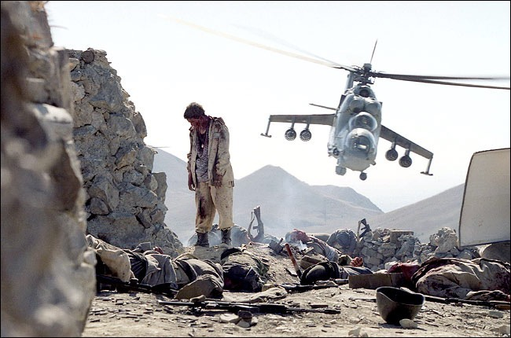

The Soviet invasion of Afghanistan
By: Ray, Connor, And William
Facts
- Soviets kill some 1-Million citizens
- Brutal 10 years
- U.S. aids Mujahdia fighters
- U.S. partners with pakastaie intelligence
- By early 80's Mujahdia were gaining control and fighting soviets
- This battle was just a small part in the cold war
- by 1982 some 2.8 million Afghans had sought asylum in Pakistan, and another 1.5 million had fled to Iran.

Who
- Thousands of Soviets
- Majahedin are afghan guerilla fighters(30)
- Between Soviets and Mujahdia backed by many countries(31)
After The War
- After the war the Taliban government took control of Afghanistan(32)
- Civil war continued afterwords